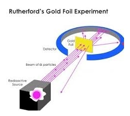
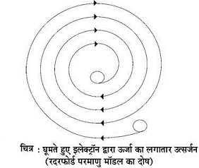

Q.1 : प्रश्न : रदरफोर्ड के नाभिकीय मॉडल को विस्तार पूर्वक समझिए व् इसके दोष बताइए
उत्तर - रदरफोर्ड का नाभिकीय मॉडल/रदरफोर्ड का प्रयोग एवं इसके निष्कर्ष (Nuclear Model of Atom/Rutherford's Experiment and its Conclusions)- लार्ड रदरफोर्ड तथा उनके सहायक वैज्ञानिकों ने सन् 1911 में गोल्ड की पतली पन्नी पर लेड (lead) धातु के बक्से में रखे रेडियोऐक्टिव तत्व से प्राप्त तीव्रगामी धन आवेश युक्त ALPHA -कणों (2He4) की बौछार की। उन्होंने देखा कि अधिकतर किरणें टकराकर सीधी निकल जाती हैं, कुछ किरणों का मार्ग थोड़ा मुड़ जाता है तथा कुछ किरणें गोल्ड की पत्नी से टकराकर लौट जाती हैं। चूँकि -कण धनावेशित होते हैं। अतः इनका,लौटना तभी सम्भव है जब वे किसी धन आवेश युक्त कठोर पिण्ड से टकरायें। इस प्रयोग से रदरफोर्ड ने निम्नलिखित निष्कर्ष | परिणाम निकाले -

चित्र 1 नाभिकीय परमाणु द्वारा अल्फा-कणों का प्रकीर्णन
(i) नाभिक का आकार, परमाणु के आकार की अपेक्षा अत्यधिक छोटा होता है, अतः परमाणु का अधिकांश भाग खाली होता है।
(ii) परमाणु के केन्द्रीय भाग को नाभिक (nucleus) कहते हैं। इसमें परमाणु का समस्त धन आवेश स्थित रहता है।
(iii) नाभिक का कुल धन आवेश इलेक्ट्रॉनों के कुल ऋण आवेश के बराबर होता है। जिससे ये आवेश परस्पर संतुलित हो जाते हैं तथा परमाणु विद्युत् उदासीन होता है।
रदरफोर्ड का परमाणु मॉडल (Rutherford's Atomic Model) - रदरफोर्ड के अनुसार परमाणु की संरचना मुख्यतः निम्नलिखित, दो भागों से मिलकर बनती है -
(i) केन्द्रीय भाग (Central Part)- परमाणु का केन्द्रीय ठोस भाग नाभिक कहलाता । है। इसमें परमाणु का समस्त भार केन्द्रित होता है। इसका व्यास 10-13 cm होता है। नाभिक में परमाणु का समस्त धन आवेश (positive charge) केन्द्रित रहता है, क्योंकि समस्त धन आवेश युक्त कण (प्रोटॉन) यहीं स्थित रहते हैं।
(ii) परा-केन्द्रीय भाग (Ultra-central Part) - नाभिक में उपस्थित धन आवेश को | संतुलित करने के लिए प्रोटॉनों की संख्या के बराबर एवं इसके विपरीत ऋणावेशित कण : (इलेक्ट्रॉन) नाभिक के चारों ओर बंद वृत्ताकार कक्षों (orbits) में तेज गति से चक्कर लगाते | रहते हैं।
इस प्रकार परिभ्रमण करते हुए इलेक्ट्रॉन पर लगने वाला अभिकेन्द्रीय बल (centripetal force), इलेक्ट्रॉन तथा नाभिक के मध्य लगने वाले आकर्षण बल को संतुलित कर देता है। इस प्रकार इलेक्ट्रॉन स्थायी रूप से नाभिक के चक्कर लगाते रहते हैं तथा नाभिक में नहीं जाते हैं। रदरफोर्ड परमाणु मॉडल के गुण - रदरफोर्ड परमाणु मॉडल के प्रमुख गुण निम्नलिखित हैं।
(i) रेडियोऐक्टिव तत्वों के परमाणु अस्थायी होते हैं।
(ii) ये परमाणु विघटित होकर नये परमाणु उत्पन्न करते हैं।
(iii) रेडियोऐक्टिव परमाणुओं द्वारा उत्सर्जित अल्फा एवं बीटा कण नाभिक से उत्सर्जित होते
(iv) उत्पन्न परमाणुओं की प्रकृति निकले हुए कणों की प्रकृति पर निर्भर करती है। |
रदरफोर्ड के परमाणु मॉडल में कमियाँ (दोष) (Drawbacks of Rutherford's Atomic Model)- रदरफोर्ड के परमाणु मॉडल में यह परिकल्पना की गई थी कि ऋणावेशित इलेक्ट्रॉन नाभिक के चारों ओर ग्रहों की भाँति स्थिर कक्षा में परिभ्रमण करते हैं परन्तु विद्युत् चुम्बकीय सिद्धांत (electromagnetic theory) के आधार पर क्लार्क एवं मैक्सवैल ने बताया कि जब विद्युत् आवेश को त्वरण प्रदान किया जाता है तब यह विकिरण उत्सर्जित करता है, जिससे ऊर्जा का क्षय होता है। अतः आवेश युक्त इलेक्ट्रॉन परिभ्रमण के समय लगातार ऊर्जा का उत्सर्जन करेगा जिससे उसका परिभ्रमण वृत्त छोटा होता चला जायेगा एवं अन्ततः इलेक्ट्रॉन नाभिक में चला जायेगा तथा परमाणु नष्ट हो जायेगा।
